Nos esforzamos para que nuestros estudiantes reciban una educación
de calidad y alcancen sus metas.
NOTICIAS 2024
Enero y Febrero 2024
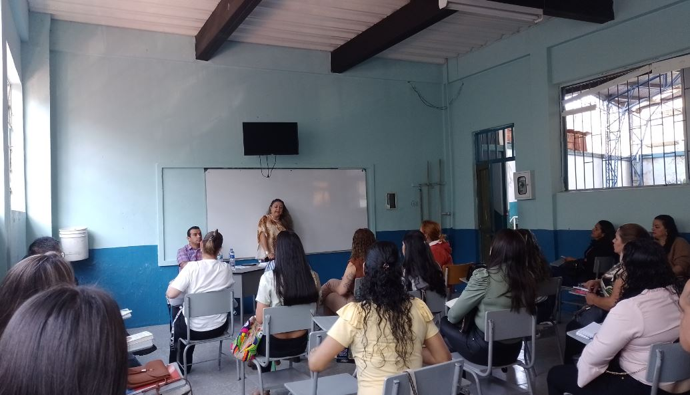Inicio de labores en la Institución Educativa
El día 15 de enero inició la nueva etapa de trabajo para los docentes, directivos y administrativos en la Institución Educativa, quienes con una buena actitud se reunieron para comenzar con la preparación de las actividades escolares de la vigencia 2024. Así, los directivos y docentes se reunieron para recibir a los nuevos profesionales que ingresaron a la Institución en Periodo de prueba: El Rector Elkin Mauricio Ávila, los docentes: Alexander Tamayo, Sergio Herrera, María Johanna Gómez, Diana Ximena Cardona, Sandro Giraldo, Julio Cesar Vergara. Con ellos se realizó un análisis de la evaluación institucional para la implementación del Plan de mejoramiento y plan operativo.
Publicado: 30 de enero de 2024.
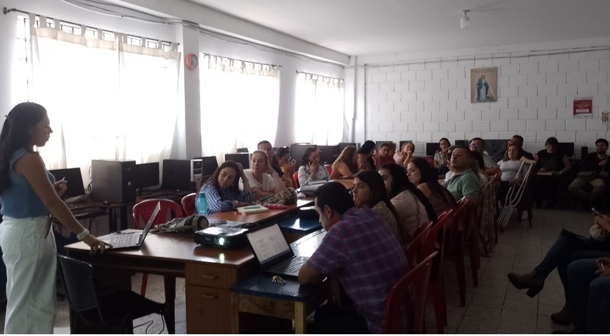Preparación de actividades escolares
Luego de haber elaborado los planes de mejoramiento correspondientes, cada grupo de docentes, tanto de las gestiones Institucionales como de las Sedes urbanas y rurales se dieron a la tarea de organizar todo lo referente a la recepción de estudiante y desarrollo de la conductas de entrada para la primera semana de desarrollo académico.
Publicado: 30 de enero de 2024.
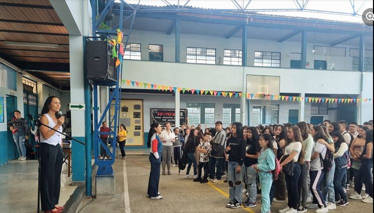
Primer Día de Clases en la Institución Educativa
El encuentro con los estudiantes se desarrolló a cabo el día 22 de enero en cada una de las Sedes, donde profesores y estudiantes expresaron sus expectativas y deseos por alcanzar en este nuevo año lectivo.
Publicado: 30 de enero de 2024.
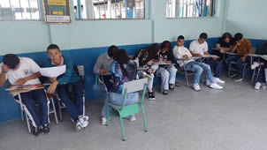
Desarrollo de conductas de entrada en la Institución
Como parte del conocimiento necesario de las normas de convivencia, procesos académicos, dar un buen ambiente a las acciones de grupo y programar los propósitos de los estudiantes en torno a sí mismos, a sus clases y a su comunidad, durante la semana del 22 al 26 de febrero, los eduandos llevaron a cabo las actividades enfocadas al autoconocimiento, al reconocimiento de la Institución y los elementos preliminares en cada una de las clases.
Publicado: 30 de enero de 2024.
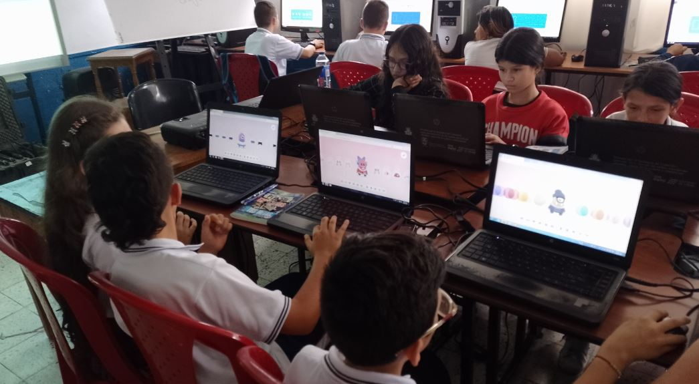
Interactuando con las aplicaciones web
Como parte de la apuesta del área de tecnología enfocada a la interacción del estudiante con las nuevas tecnologías y aplicaciones web, se desarrollaron las acciones pedagógicas en las que cada estudiante creó una cuenta y diseñó su ávatar, teniendo para ello la cuenta de classdojo. Esta aplicación será util para la toma de asistencia y para la asignación de puntos positivos por su trabajo, participación y progreso en cada una de las clases programadas.
Publicado: 30 de enero de 2024.
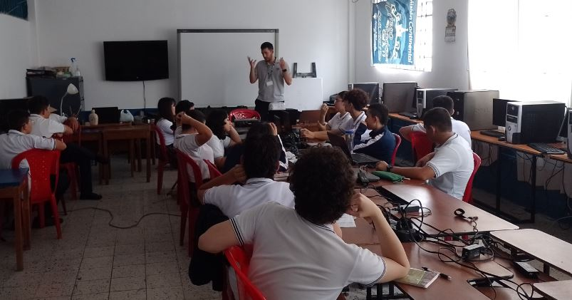
Inicio del proceso de investigación en proyecto tecnológico
Luego de haber elaborado los planes de mejoramiento correspondientes, cada grupo de docentes, tanto de las gestiones Institucionales como de las Sedes urbanas y rurales se dieron a la tarea de organizar todo lo referente a la recepción de estudiante y desarrollo de la conductas de entrada para la primera semana de desarrollo académico.
Publicado: 30 de enero de 2024.
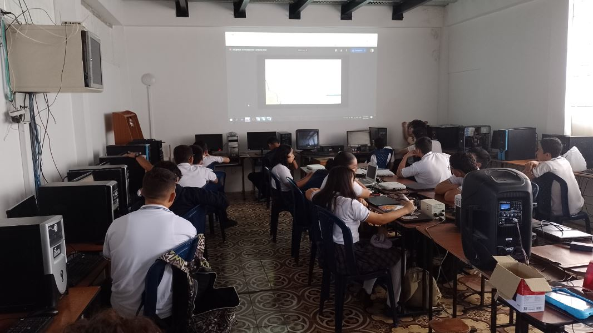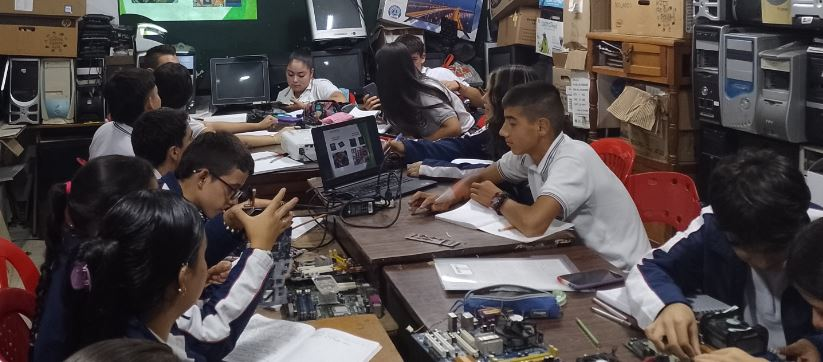
Inicio de Clases en articulación con la Media
Este año brindó a la Institución una nueva oportunidad de trabajar en 2 programas de articulación con la media a través del SENA con los estudiantes de grado décimo. En esta ocasión, luego de haber realizado la inducción con los estudiantes en torno a la elección y posterior matrícula con el SENA, surgieron dos grupos para cada uno de los programas a los cuales la Institución aceptó tener durante la vigencia: técnico en Sistemas y técnico en Programación de Software.
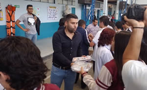Alcaldía Municipal realizó entrega de Paquete Escolar
Como parte del compromiso que tiene la alcaldía municipal con la educación de Aranzazu, el día 14 de febrero se llevó a cabo la entrega del paquete escolar por parte de los funcionarios encabezados por el alcalde Sebastián Merchán.
Publicado: 29 de febrero de 2024.
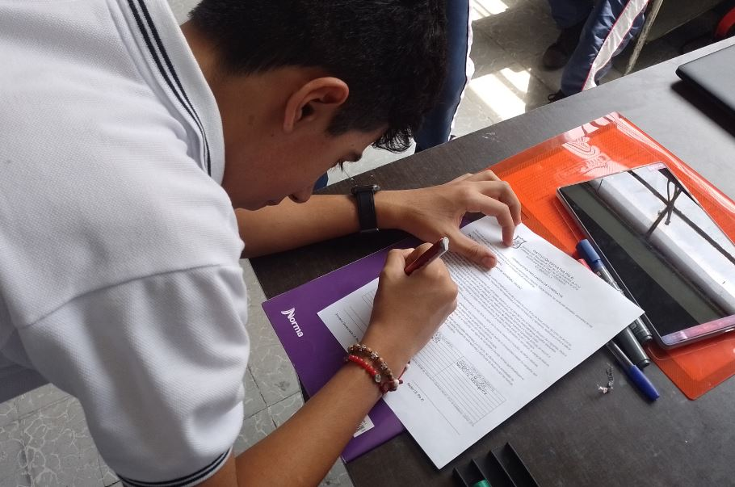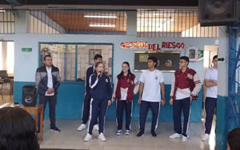Se inician campañas de representantes estudiantiles a Gobierno Escolar
A petición de la Secretaría de Educación Departamental, el proyecto de Democracia realizó los ajustes para la elección de los representantes estudiantiles: personero y contralor. para tal efecto, se llevó a cabo la motivación e inscripción de los candidatos a personería: Gerónimo Arias y Natalia Vasquez, y a la contraloría: Samuel Gonzalo Jiménez y María José Hurtado.
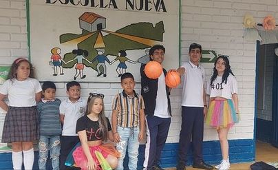Realización de campañas a personería y contraloría estudiantil
Como parte de las acciones planteadas por el Proyecto transversal de Democracia, los candidatos a cada uno de los cargos, junto con un grupo de compañeros de grados décimo y once, se desplazaron a las sedes educativas de la Institución con el objetivo de explicar sus propuestas de trabajo y convencer a cada uno de los estudiantes a votar por ellos en el día de las elecciones.
Publicado: 29 de febrero de 2024.
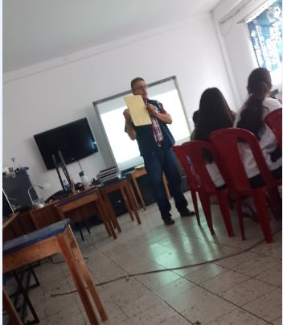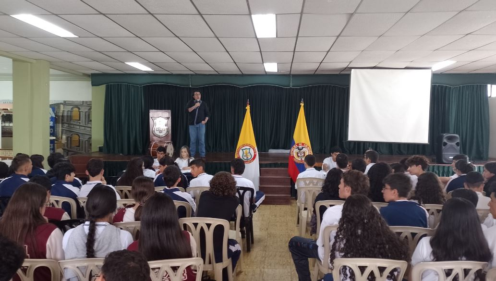
Finalización de campañas a personería y contraloría estudiantil
Luego de dos semanas de campañas, los docentes del proyecto de Democracia programaron los espacios para el debate de propuestas de cada uno de los candidatos como actividad del cierre de campañas; de la misma manera, se realizó una capacitación a estudiantes que se desempeñaron como jurados de votación en las elecciones del día 28 de febrero..
Publicado: 29 de febrero de 2024.
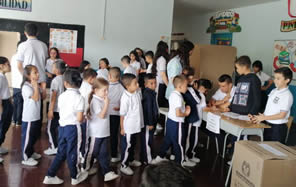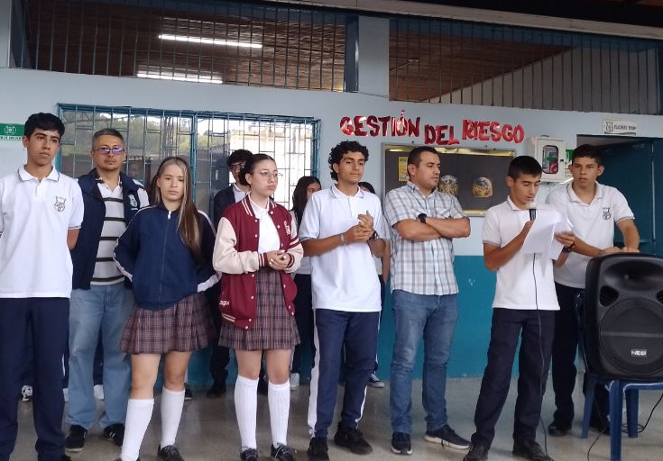
Estuidantes eligieron personero y contralor estudiantil
El día 28 de febrero se desarrollaron las elecciones de los representantes estudiantiles al Gobierno Escolar, los cuales fueron elegidos como personero: Gerónimo Arias y como Contralor estudiantil: María José Hurtado.